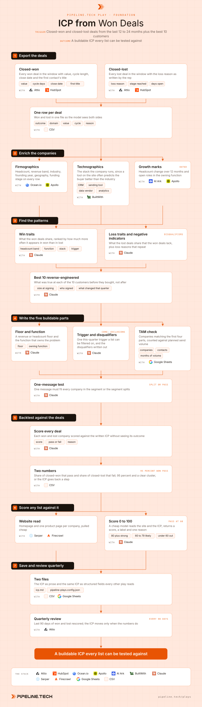

Play 01 · Foundation
ICP from Won Deals
Give this to your agent
Install the Pipeline.tech "ICP from Won Deals" outbound play. Fetch https://raw.githubusercontent.com/pipeline-tech/plays/main/core/SKILL.md and https://raw.githubusercontent.com/pipeline-tech/plays/main/plays/icp-from-won-deals/SKILL.md, save them as ~/.claude/skills/pipeline-outbound-core/SKILL.md and ~/.claude/skills/pipeline-icp-from-won-deals/SKILL.md, then run /pipeline-icp-from-won-deals.
Paste into Claude Code. It installs the shared core rules plus this play, then runs it as /pipeline-icp-from-won-deals.

Workflow, generated from the skillOpen full size
"B2B SaaS, 50 to 500 people" is a market, not an ICP, and a list built on it exhausts the budget before it finds the buyer. The real ICP is the exact company and persona most likely to buy and stay, and your closed-won deals already describe it while your closed-lost deals describe the edges. This play reads both, writes the ICP as five parts a list builder can act on, and proves it by backtesting against the deals you already closed.
Load pipeline-outbound-core first. Where a step says "apply core", follow that section of the core skill.
Inputs
Ask for these before step 1, and save them to ./pipeline-plays.config.json:
- CRM access (Attio first, HubSpot as the option) or a CSV export of deals. Stack answers from core section 1.
- The window. Default 24 months, never less than 12. Under 30 closed-won deals, say so and widen the window or add current customers with their start date as the close date.
- The best 10 customers by revenue, retention and ease of close. If the user cannot name them, rank by annual value times months retained and show the top 15 for a hand pick.
- Planned send volume per month. This sets the TAM floor in step 4.
- What the product does in one sentence, so the model can judge which function owns the problem.
Steps
1Export the deals
ToolsAttioHubSpot (option)CSV
- Pull every closed-won and closed-lost deal in the window with value, cycle length in days, close date, stage reached, the loss reason as the rep wrote it, and the first contact's title.
- Resolve a domain for every company in its own pass. A row with no domain cannot be enriched or backtested.
- Write one CSV with an
outcomecolumn. Keep the raw export untouched beside it.
2Enrich the companies
ToolsOcean.ioApolloBuiltWithAI Ark (optional)
- Add firmographics to every row, then technographics from the website. The stack says more about buying behaviour than the industry label does.
- Add the 12-month headcount change and open roles in the function you sell to. These are the trigger candidates for step 4.
3Find the patterns
ToolsClaude
- Give the model the enriched file and ask for three lists: traits far more common in won than in lost, traits far more common in lost than in won, and loss reasons that repeat three times or more. Every claim cites the count on each side.
- Reverse-engineer the best 10 customers one at a time: headcount at signing, who signed, what the company was doing that quarter, the stack at the time. What was true before they bought is the ICP. What is true now is the result of being a customer.
- Where the 10 disagree with the aggregate, trust the 10. They are the customers you want more of.
4Write the five buildable parts
ToolsClaudeGoogle Sheets
- Write the ICP as five parts a list builder can filter on: a revenue or headcount floor, the function that owns the problem, a trigger visible this quarter, the disqualifiers written out, and a TAM large enough for the planned send volume. A 400-company ICP exhausts in six weeks.
- Define the decision maker per company size band. Apply core: enrichment for the bands, then name the titles the won deals actually signed with inside each band.
- Run the one-message test. Draft one 40-word opener. If it fits every company in the segment, the segment holds. If some companies need a different first sentence, the segment splits and each half gets its own five parts.
- Count the TAM. If it covers fewer than four months of planned volume, loosen the floor or the trigger, never the disqualifiers.
5Backtest against the deals
ToolsClaudeCSV
- Score every company in the deal file against the written ICP with the outcome column hidden. The scorer sees only the enrichment and the website.
- Target: 95 percent or more of closed-won pass. Losses should cluster outside the ICP, or inside it with the same loss reason. A loss that passes with a unique reason is a sales problem, not an ICP problem, so leave it.
- Below 95 percent, read the won deals that failed. If they share a trait, the ICP is too narrow on that trait. If they share nothing, they are exceptions and the ICP stands.
6Score any list against it
ToolsSerperFirecrawlClaude
- Pull the homepage and one product or about page per company. Search results fill the gap when a site will not load.
- A cheap model scores each company 0 to 100 against the five parts with one reason. 80 and above is strong, 60 to 79 likely, below 60 is out. Pass at 60. A company matching a disqualifier scores 0 regardless.
- Read the drop reasons in bulk. One reason repeating across many rows means the ICP wording is wrong, not the list. Hand-sample 50 keeps.
- Apply core: lists for the sourcing order. This step runs before any paid people lookup.
7Save and review quarterly
ToolsCSVGoogle SheetsAttio
- Write
./icp.mdwith the five parts, the decision maker per size band, the disqualifiers, the backtest numbers and the date. Write the same content as structured fields into./pipeline-plays.config.jsonundericp, so the signal plays and list plays filter on it without asking. - Every 90 days, export the deals closed since the last review and rerun step 5 on them alone. Change the ICP only when the pass rate drops or a new loss reason repeats.
- Apply core: credits and handoff.
Guardrails
- Never write an industry label as the ICP. "SaaS" or "e-commerce" is a market. The five parts are the ICP.
- Never let the model see the outcome column during the backtest or the list scoring. A scorer that knows the answer proves nothing.
- Never loosen a disqualifier to hit the TAM number. Loosen the floor or the trigger instead.
- Never carry customer names, deal values or loss reasons into any file a prospect could see. The ICP is the pattern, not the roster.
- Fewer than 30 closed-won deals is a thin sample. Say so in
icp.mdand schedule the first review at 60 days instead of 90.
Example run
User: "/pipeline-icp-from-won-deals, we sell a revenue intelligence tool, Attio is the CRM"
- Exported 24 months from Attio: 68 closed-won, 214 closed-lost, 11 rows with no domain fixed by hand.
- Enriched 282 companies. Headcount, revenue band and stack found for 271.
- Four win traits: 80 to 400 headcount, a VP of Sales or CRO in seat under 18 months, an outbound stack running, at least one open SDR role. "No budget" and "too early" repeated 61 times, almost all under 40 people.
- Best 10 agreed on three of the four and added a Series A or B in the prior 12 months. Wrote the five parts, set the floor at 80 headcount and the trigger as an SDR or AE role opened this quarter. The one-message test split the segment into mid-market with a CRO and SMB with a founder-led sales team.
- Backtest: 65 of 68 won passed (96 percent); 183 of 214 lost failed, 24 of the rest shared the loss reason "already using a competitor".
- Scored a 2.4K-company Apollo pull: 1.1K passed at 60, 390 strong. Drop reason "no outbound motion" repeated 600 times, so the ICP gained a stack requirement.
- Saved
icp.mdand the config, next review booked for 90 days out.
Run this play with usPipeline.tech runs ICP from Won Deals end to end for clients: infrastructure, lists, copy, sends and replies.
Book a callView on GitHub